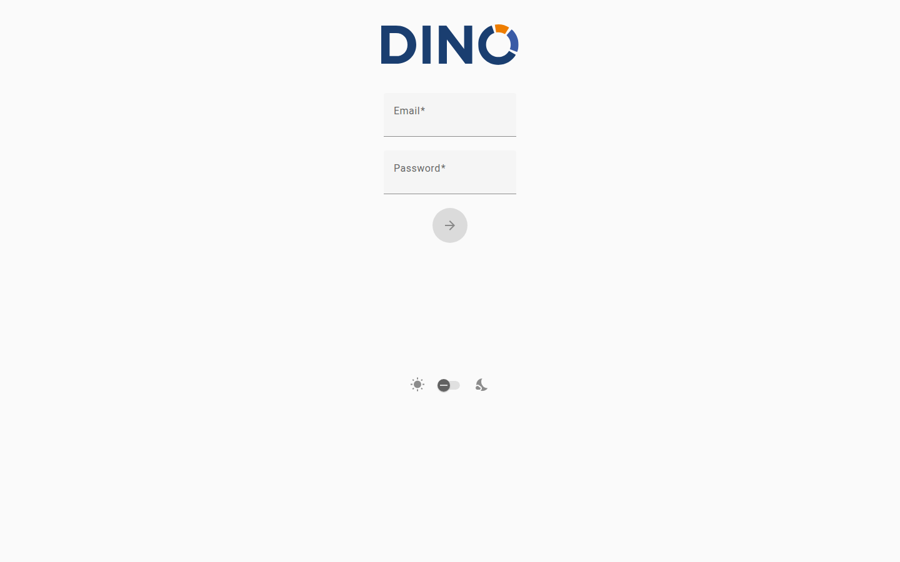

Iniciar sesión en Dino
La página de inicio de sesión es el punto de partida para acceder a Dino. Desde aquí puedes iniciar sesión en tu cuenta, crear una cuenta nueva o recuperar el acceso si has olvidado tu contraseña. Dependiendo de cómo tu organización haya configurado Dino, es posible que algunas de las opciones descritas a continuación no estén visibles.

Iniciar sesión
Usa tus credenciales para acceder a la plataforma.
- En la página de inicio de sesión, introduce tu nombre de usuario o dirección de correo electrónico en el primer campo.
- Introduce tu contraseña en el segundo campo.
- Haz clic en el botón de flecha para iniciar sesión.
Si tus credenciales son correctas, se te redirigirá automáticamente al Panel.
Si el inicio de sesión falla, aparecerá un mensaje de error debajo del formulario. Verifica que tu correo electrónico y contraseña sean correctos, asegurándote de que no haya espacios adicionales, y vuelve a intentarlo.
Restablecer tu contraseña
Si has olvidado tu contraseña, puedes solicitar un enlace de restablecimiento por correo electrónico.
Función opcional
Esta opción puede no estar disponible en tu instalación. Si no ves el enlace "¿Olvidaste tu contraseña?", contacta con tu administrador.
- En la página de inicio de sesión, haz clic en "¿Olvidaste tu contraseña?" debajo del formulario de inicio de sesión.
- Introduce la dirección de correo electrónico asociada a tu cuenta.
- Haz clic en el botón de flecha para enviar la solicitud.
Recibirás un mensaje de confirmación en la parte superior de la pantalla. Revisa tu bandeja de entrada en busca de un correo electrónico que contenga un enlace para establecer una nueva contraseña. Si el correo no llega en unos minutos, revisa tu carpeta de spam.
Para volver al formulario de inicio de sesión sin restablecer tu contraseña, haz clic en "En realidad, sí recuerdo mi contraseña".
Para más detalles, consulta la página Restablecer contraseña.
Crear una cuenta nueva
Si aún no tienes una cuenta, es posible que puedas registrarte directamente desde la página de inicio de sesión.
Función opcional
Esta opción puede no estar disponible en tu instalación. Si no ves el enlace "¿Usuario nuevo? Crear cuenta nueva", contacta con tu administrador para que te cree una cuenta.
- En la página de inicio de sesión, haz clic en "¿Usuario nuevo? Crear cuenta nueva".
- Introduce tu nombre completo.
- Introduce tu dirección de correo electrónico.
- Elige una contraseña (de al menos 9 caracteres).
- Vuelve a introducir tu contraseña en el campo Confirmar contraseña para asegurarte de que coincidan.
- Si se muestra una Política de privacidad, lee el texto y marca la casilla para aceptar los términos y condiciones. Debes aceptarlos para continuar.
- Haz clic en el botón de flecha para crear tu cuenta.
Una vez creada tu cuenta, se iniciará sesión automáticamente y se te redirigirá al Panel.
Si ya tienes una cuenta, haz clic en "¿Ya tienes una cuenta? Iniciar sesión" para volver al formulario de inicio de sesión.
Iniciar sesión con una cuenta externa
Tu organización puede permitirte iniciar sesión utilizando tu cuenta de Microsoft o Google existente, en lugar de una contraseña de Dino independiente.
Función opcional
Esta opción puede no estar disponible en tu instalación. Los botones solo aparecerán si tu administrador ha habilitado el inicio de sesión externo.
- En la página de inicio de sesión, haz clic en "Iniciar sesión con Microsoft" o "Iniciar sesión con Google", según la cuenta que quieras usar.
- Se te redirigirá a Microsoft o Google para confirmar tu identidad.
- Después de autorizar el acceso, se te devolverá a Dino y se iniciará sesión automáticamente.
Configuración de la página
Hay un pequeño conjunto de preferencias de visualización disponibles directamente en la página de inicio de sesión.
Tema claro / oscuro
Hay un interruptor disponible en la parte inferior del formulario, entre un ícono de sol y un ícono de luna. Haz clic o deslízalo para cambiar entre modo claro y modo oscuro. Esta configuración surte efecto de inmediato.
Selección de plataforma
Función opcional
Esta opción puede no estar disponible en tu instalación. Solo se muestra en implementaciones multiplataforma.
Si aparece un menú desplegable "Elige tu plataforma", selecciona la plataforma a la que quieres conectarte antes de iniciar sesión. El menú desplegable mostrará los entornos que tu administrador haya configurado.
Solución de problemas
"Hubo un problema al conectarse al servidor de autenticación o tu token ha caducado."
Warning
Tu sesión anterior ha caducado o se interrumpió la conexión con el servidor de autenticación. Esto no es un error por tu parte. Simplemente introduce tus credenciales y vuelve a iniciar sesión.
"Hubo un problema durante el proceso de sincronización."
Warning
Se produjo un error al sincronizar tus datos, lo que puede estar relacionado con una importación de formularios reciente. Revisa los formularios que estabas importando por si hubiera problemas y, a continuación, vuelve a iniciar sesión. Si el problema persiste, contacta con tu administrador.
"Cargando autenticación externa…" sin redirección
Warning
Este mensaje aparece brevemente al completar un inicio de sesión mediante Microsoft o Google. Si la página no avanza automáticamente después de unos segundos, intenta iniciar sesión de nuevo. Si el problema se repite, contacta con tu administrador para verificar que el servicio de autenticación externa esté configurado correctamente.